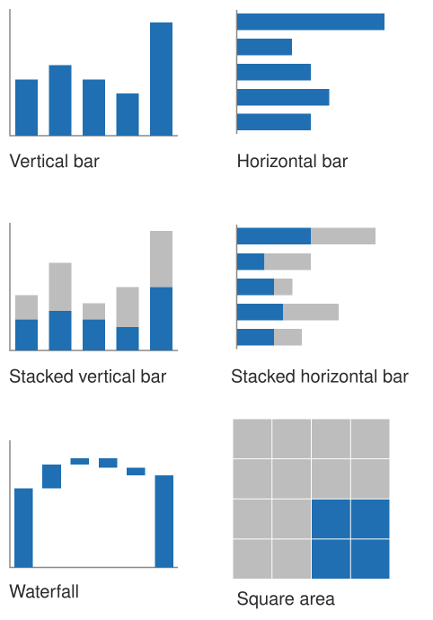
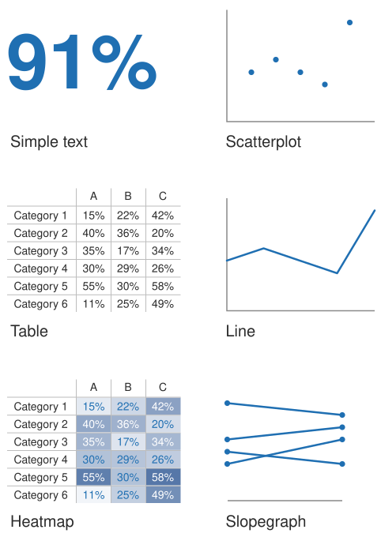
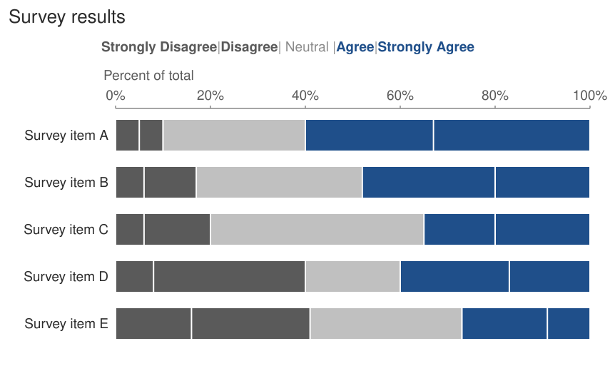
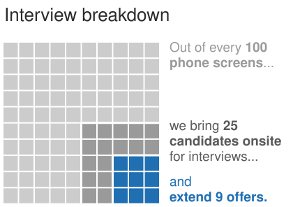
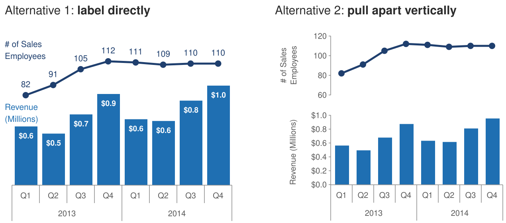
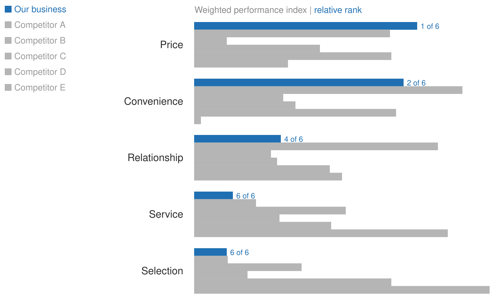
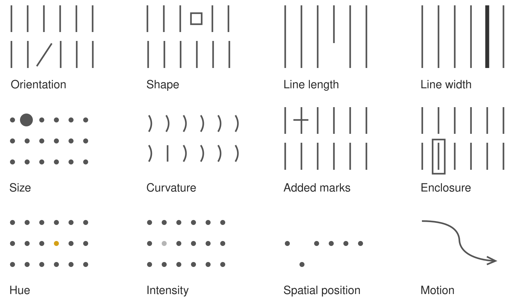
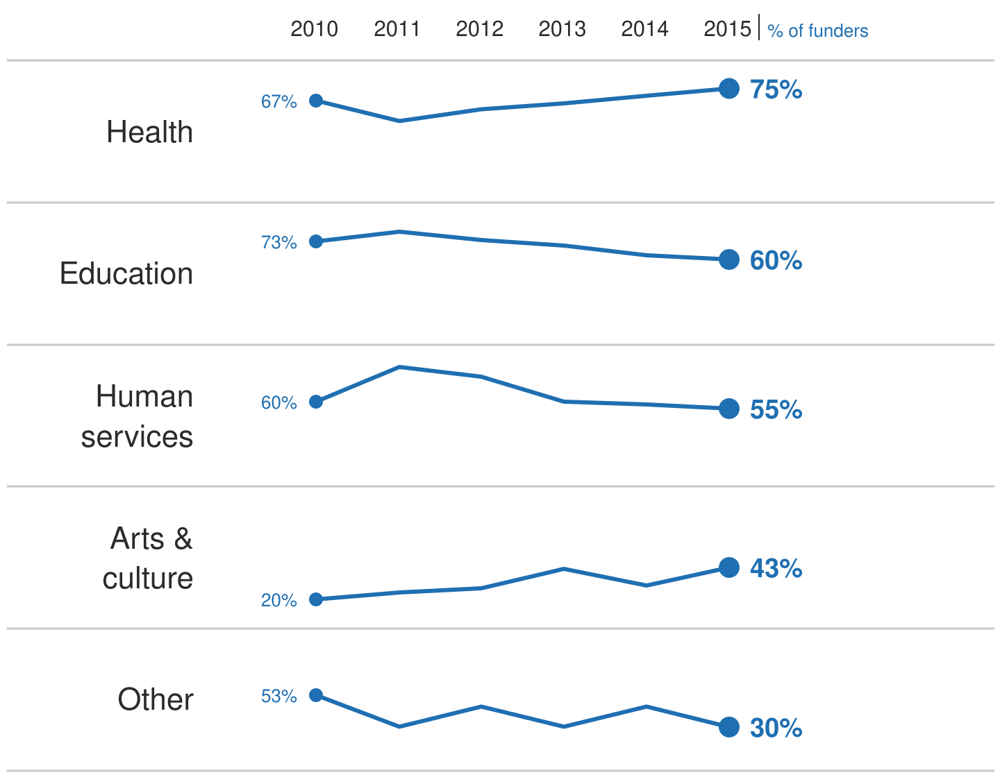

4.3. data science#
4.3.1. pqrs#
Goal: inference - conclusion or opinion formed from evidence
PQRS
P - population
Q - question - 2 types
hypothesis driven - does a new drug work
discovery driven - find a drug that works
R - representative data colleciton
simple random sampling = SRS
w/ replacement: \(var(\bar{X}) = \sigma^2 / n\)
w/out replacement: \(var(\bar{X}) = (1 - \frac{n}{N}) \sigma^2 / n\)
S - scrutinizing answers
4.3.2. visualization#
First 5 parts here are based on the book storytelling with data by cole nussbaumer knaflic
difference between showing data + storytelling with data
4.3.2.1. understand the context (1)#
who is your audience? what do you need them to know/do?
exploratory vs explanatory analysis
slides (need little details) vs email (needs lots of detail) - usually need to make both in slideument
should know how much nonsupporting data to show
distill things down into a 3-minute story or a 1-sentence Big Idea
easiest to start things on paper/post-it notes
4.3.2.2. choose an effective visual (2)#
 |
 |
|---|---|
 |
 |
 |
 |
 |
 |
generally avoid pie/donut charts, 3D charts, 2nd y-axes
tables
best for when people will actually read off numbers
minimalist is best
bar charts should basically always start at 0
horizontal charts typically easy to read
on axes, retain things like dollar signs, percent, etc.
4.3.2.3. eliminate clutter (3)#
gestalt principles of vision
proximity - close things are grouped
similarity - similar things are grouped
connection - connected things are grouped
enclosure
closure
continuity
generally good to have titles and such at top-left!
diagonal lines / text should be avoided
center-aligned text should be avoided
label lines directly
4.3.2.4. focus attention (4)#
visual hierarchy - outlines what is important
4.3.2.5. tell a story / think like a designer (5)#
affordances - aspects that make it obvious how something will be used (e.g. a button affords pushing)
“You know you’ve achieved perfection, not when you have nothing more to add, but when you have nothing to take away” (Saint‐Exupery, 1943)
stories have different parts, which include conflict + tension
beginning - introduce a problem / promise
middle - what could be
end - call to action
horizontal logic - people can just read title slides and get out what they need
can either convince ppl through conventional rhetoric or through a story
4.3.2.6. visual summaries#
numerical summaries
mean vs. median
sd vs. iq range
visual summaries
histogram
kernel density plot - Gaussian kernels
with bandwidth h \(K_h(t) = 1/h K(t/h)\)
plots
box plot / pie-chart
scatter plot / q-q plot
q-q plot = probability plot - easily check normality
plot percentiles of a data set against percentiles of a theoretical distr.
should be straight line if they match
transformations = feature engineering
log/sqrt make long-tail data more centered and more normal
delta-method - sets comparable bw (wrt variance) after log or sqrt transform: $\(Var(g(X)) \approx [g'(\mu_X)]^2 Var(X)\)\( where \)\mu_X = E(X)$
if assumptions don’t work, sometimes we can transform data so they work
transform x - if residuals generally normal and have constant variance
corrects nonlinearity
transform y - if relationship generally linear, but non-constant error variance
stabilizes variance
if both problems, try y first
Box-Cox: Y’ = $\(Y^l \: if \: l \neq 0\)$, else log(Y)
least squares
inversion of pxp matrix ~O(p^3)
regression effect - things tend to the mean (ex. bball children are shorter)
in high dims, l2 worked best
kernel smoothing + lowess
can find optimal bandwidth
nadaraya-watson kernel smoother - locally weighted scatter plot smoothing
- \[ \begin{align}\begin{aligned}g_h(x) = \frac{\sum K_h(x_i - x) y_i}{\sum K_h (x_i - x)}$$ where h is bandwidth - *loess* - multiple predictors / *lowess* - only 1 predictor - also called *local polynomial smoother* - locally weighted polynomial - take a window (span) around a point and fit weighted least squares line to that point - replace the point with the prediction of the windowed line - can use local polynomial fits rather than local linear fits 6. *silhouette plots* - good clusters members are close to each other and far from other clustersf 1. popular graphic method for K selection 2. measure of separation between clusters $s(i) = \frac{\corange{b(i)} - \cblue{a(i)}}{\max(\cblue{a(i)}, \corange{b(i)})}$ 1. <span class="cblue">a(i)</span> - ave dissimilarity of data point i with other points within same cluster 2. <span class="corange">b(i)</span> - lowest average dissimilarity of point i to any other cluster 3. good values of k maximize the average silhouette score 7. lack-of-fit test - based on repeated Y values at same X values\\## imbalanced data\\1. randomly oversample minority class 2. randomly undersample majority class 3. weighting classes in the loss function - more efficient, but requires modifying model code 4. generate synthetic minority class samples 1. smote ([chawla et al. 2002](https://jair.org/index.php/jair/article/view/10302)) - interpolate betwen points and their nearest neighbors (for minority class) - some heuristics for picking which points to interpolate<img style="width: 600px; max-width: 100%;" src="../assets/smote.svg" alt="SMOTE oversampling"/> 1. adasyn ([he et al. 2008](https://ieeexplore.ieee.org/abstract/document/4633969/)) - smote, generate more synthetic data for minority examples which are harder to learn (number of samples is proportional to number of nearby samples in a different class) 2. [smrt](https://github.com/tgsmith61591/smrt) - generate with vae 5. selectively removing majority class samples 1. tomek links ([tomek 1976](https://pdfs.semanticscholar.org/090a/6772a1d69f07bfe7e89f99934294a0dac1b9.pdf?_ga=2.141687734.587787484.1573518991-2102528433.1505064485)) - selectively remove majority examples until al lminimally distanced nearest-neighbor pairs are of the same class 2. near-miss ([zhang & mani 2003](https://www.site.uottawa.ca/~nat/Workshop2003/jzhang.pdf)) - select samples from the majority class which are close to the minority class. Example: select samples from the majority class for which the average distance of the N *closest* samples of a minority class is smallest 3. edited nearest neighbors ([wilson 1972](https://ieeexplore.ieee.org/abstract/document/4309137)) - "edit" the dataset by removing samples that don't agree "enough" with their neighborhood 6. feature selection and extraction 1. minority class samples can be discarded as noise - removing irrelevant features can reduce this risk 2. feature selection - select a subset of features and classify in this space 3. feature extraction - extract new features and classify in this space 4. ideas 1. use majority class to find different low dimensions to investigate 2. in this dim, do density estimation 3. residuals - iteratively reweight these (like in boosting) to improve performance 7. incorporate sampling / class-weighting into ensemble method (e.g. treat different trees differently) 1. ex. undersampling + ensemble learning (e.g. [IFME](https://dl.acm.org/citation.cfm?id=2467736), Becca's work) 8. algorithmic classifier modifications 9. misc papers 1. enrichment ([jegierski & saganowski 2019](https://arxiv.org/pdf/1911.06965v1.pdf)) - add samples from an external dataset 10. ref 1. [imblanced-learn package](https://imbalanced-learn.readthedocs.io/en/stable/api.html) with several methods for dealing with imbalanced data 2. [good blog post](https://www.jeremyjordan.me/imbalanced-data/) 3. Learning from class-imbalanced data: Review of methods and applications ([haixiang et al. 2017](https://www-sciencedirect-com.libproxy.berkeley.edu/science/article/pii/S0957417416307175)) 4. sample majority class w/ density (to get best samples) 5. log-spline - doesn't scale\\## missing-data imputation\\- Missing value imputation: a review and analysis of the literature ([lin & tsai 2019](https://link.springer.com/article/10.1007/s10462-019-09709-4)) - Causal Inference: A Missing Data Perspective ([ding & li, 2018](https://arxiv.org/abs/1712.06170)) - different missingness mechanisms ([little & rubin, 1987](https://www.jstor.org/stable/1165119)) - MCAR = missing completely at random - no relationship between the missingness of the data and any values, observed or missing - MAR = missing at random - propensity of missing values depends on *observed* data, but *not* the missing data - can easily test for this vs MCAR - MNAR = missing not at random - propensity of missing values depends both on observed and unobserved data - connections to causal: MCAR is much like randomization, MAR like ignorability (although slightly more general), and MNAR like unmeasured unconfounding - imputation problem: propensity of missing values depends on the unobserved values themselves (not ignorable) - simplest approach: drop rows with missing vals - mean/median imputation - probabilistic approach - EM approach, MCMC, GMM, sampling - matrix completion: low-rank, PCA, SVD - nearest-neighbor / matching: hot-deck - (weighted) prediction approaches - linear regr, LDA, naive bayes, regr. trees - can do weighting using something similar to inverse propensities, although less common to check things like covariate balance - multiple imputation: impute multiple times to get better estimates - MICE (passes / imputes data multiple times sequentially) - can perform sensitivity analysis to evaluate the assumption that things are not MNAR - two standard models for nonignorable missing data are the *selection* models and the *pattern-mixture* models ([Little and Rubin, 2002](https://books.google.com/books?hl=en&lr=&id=BemMDwAAQBAJ&oi=fnd&pg=PR11&dq=Little,+R.+J.+and+Rubin,+D.+B.+(2002).+Statistical+analysis+with+missing+data.+John+Wiley+%26+Sons.&ots=FByXa-CVWU&sig=jIjvaI90RNK1rNfJoKoGvGJsz-E#v=onepage&q=Little%2C%20R.%20J.%20and%20Rubin%2C%20D.%20B.%20(2002).%20Statistical%20analysis%20with%20missing%20data.%20John%20Wiley%20%26%20Sons.&f=false), Chapter 15) - performance evaluation - acc at finding missing vals - acc in downstream task - applications - Purposeful Variable Selection and Stratification to Impute Missing FAST Data in Trauma Research ([fuchs et al. 2014](https://www.ncbi.nlm.nih.gov/pmc/articles/PMC3744188/))\\### matrix completion\\- A Survey on Matrix Completion: Perspective of Signal Processing ([li...zhao, 2019](https://arxiv.org/pdf/1901.10885.pdf)) - formulations - Exact matrix completion via convex optimization ([candes & recht, 2012](https://dl.acm.org/doi/abs/10.1145/2184319.2184343)) - $$\min _{\boldsymbol{M}} \operatorname{rank}(\boldsymbol{M})$$, s.t. $$\left\vert \boldsymbol{M}_{\Omega}-\boldsymbol{X}_{\Omega}\right\vert _F \leq \delta$$: - this is NP-hard - nuclear norm approxmiation - $$\min _{\boldsymbol{M}}\vert \boldsymbol{M}\vert _*$$, s.t. $$\vert \vert \boldsymbol{M}_{\Omega}-\boldsymbol{X}_{\Omega}\vert \vert _F \leq \delta\end{aligned}\end{align} \]
this has be formulated as semidefinite programming, nuclear norm relaxation, or robust PCA
minimum rank approximation helps with the assumption that the data are corrupted by noise (e.g. ADMiRA (lee & bresler, 2010))
- \[\min _{\boldsymbol{M}}\left\vert (\boldsymbol{M})_{\Omega}-\boldsymbol{X}_{\Omega}\right\vert _F^2$$, s.t. $\operatorname{rank}(\boldsymbol{M}) \leq r$ - matrix factorization is a faster but non-convex approximation (e.g. LMaFit ([wen, yin, & zhang, 2012](https://link.springer.com/article/10.1007/s12532-012-0044-1))) - $$\min _{\boldsymbol{U}, \boldsymbol{V}, \boldsymbol{Z}}\left\vert \boldsymbol{U} \boldsymbol{V}^T-\boldsymbol{Z}\right\vert _F^2$$, s.t. $$\boldsymbol{Z}_{\Omega}=\boldsymbol{X}_{\Omega}\]
\(\ell_p\)-Norm minimization - use a different norm than Frobenius to handle specific types of noise
Adaptive outlier pruning (yan, yang, & osher, 2013) - better handles outliers
algorithms
gradient-based
gradient descent
accelerated proximal descent
bregman iteration
non-gradient
block coordinate descent
ADMM: alterntating direction method of multipliers
Newer approaches
Simple, Fast, and Flexible Framework for Matrix Completion with Infinite Width Neural Networks (radhakrishnan…belkin, uhler, 2022) - use NTK for FCN/CNN to do matrix completion
Graph Convolutional Matrix Completion (van den berg, kipf, & welling, 2017)
Transformer methods for image inpainting (e.g. mask-aware tranfsormer, 2022)
4.3.3. preprocessing#
often good to discretize/binarize features
e.g. from genomics
whitening
get decorrelated features \(Z\) from inputs \(X\)
\(W=\) whitening matrix, selected based on problem goals:
PCA: Maximal compression of \(\mathbf{X}\) in \(\mathbf{Z}\)
ZCA: Maximal similarity between \(\mathbf{X}\) and \(\mathbf{Z}\)
Cholesky: Inducing structure: \(\operatorname{Cov}(X, Z)\) is lower-triangular with positive diagonal elements
\(W\) is constrained as to enforce \(\Sigma_{Z}=I\)
4.3.4. feature selection#
4.3.4.1. filtering - select based on summary statistic#
ranks features or feature subsets independently of the predictor
univariate methods (consider one variable at a time)
ex. variance threshold
ex. T-test of y for each variable
ex. correlation screening: pearson correlation coefficient - this can only capture linear dependencies
mutual information - covers all dependencies
ex. chi\(^2\), f anova
multivariate methods
features subset selection
need a scoring function
need a strategy to search the space
sometimes used as preprocessing for other methods
4.3.4.2. wrapper - recursively eliminate features#
uses a predictor to assess features of feature subsets
learner is considered a black-box - use train, validate, test set
forward selection - start with nothing and keep adding
backward elimination - start with all and keep removing
others: Beam search - keep k best path at teach step, GSFS, PTA(l,r), floating search - SFS then SBS
4.3.4.3. embedding - select from a model#
uses a predictor to build a model with a subset of features that are internally selected
ex. lasso, ridge regression, random forest
4.3.5. reproducibility#
4.3.5.1. containerization#
e.g. docker
4.3.5.2. data version control#
dvc - data version control
.dvc folder keeps track of some internal stuff (like .git)
metafiles ending with .dvc are stored in git, tracking big things like data and models
also simple support for keeping track of metrics, displaying pipeline, making plots
keep track of old things using git checkout and dvc checkout
dagshub - built on dvc, like github (gives ~10GB free storage per project)
“Our recommendation is to separate distinct experiments (for example, different types of models) into separate branches, while smaller changes between runs (for example, changing model parameters) are consecutive commits on the same branch.”
not open source :frowning_face:
replicate.ai - version control for ml
lightweight, focuses on tracking model weights / sharing + dependencies
less about hyperparams
mlflow (open-source) from databricks
API and UI for logging parameters, code versions, metrics and output files
gigantum - like a closed-source dagshub
codalab - good framework for reproducibility
paid / closed-source
weights and biases (free for academics, paid otherwise)
4.3.5.3. hyperparameter tuning#
weaker versions
tensorboard (mainly for deep learning)
pytorch-lightning + hydra
4.3.5.4. weights and biases#
wandb.login()- login to W&B at the start of your sessionwandb.init()- initialise a new W&B, returns a “run” objectwandb.log()- logs whatever you’d like to log
4.3.5.5. workflow management#
-
tasks are basically functions
flows are used to describe the dependencies between tasks, such as their order or how they pass data around
4.3.6. principles#
4.3.6.1. breiman#
conversation
moved sf -> la -> caltech (physics) -> columbia (math) -> berkeley (math)
info theory + gambling
CART, ace, and prob book, bagging
ucla prof., then consultant, then founded stat computing at berkeley
lots of cool outside activities
ex. selling ice in mexico
2 cultures paper
generative - data are generated by a given stochastic model
stat does this too much and needs to move to 2
ex. assume y = f(x, noise, parameters)
validation: goodness-of-fit and residuals
predictive - use algorithmic model and data mechanism unknown
assume nothing about x and y
ex. generate P(x, y) with neural net
validation: prediction accuracy
axioms
Occam
Rashomon - lots of different good models, which explains best?
ex. rf is not robust at all
Bellman - curse of dimensionality
might actually want to increase dimensionality (ex. svms embedded in higher dimension)
industry was problem-solving, academia had too much culture
4.3.6.2. box + tukey#
questions
what points are relevant and irrelevant today in both papers?
relevant
box
thoughts on scientific method
solns should be simple
necessity for developing experimental design
flaws (cookbookery, mathematistry)
tukey
separating data analysis and stats
all models have flaws
no best models
lots of goold old techniques (e.g. LSR)
irrelevant
some of the data techniques (I think)
tukey multiple-response data has been better attacked (graphical models)
how do you think the personal traits of Tukey and Box relate to the scientific opinions expressed in their papers?
probably both pretty critical of the science at the time
box - great respect for Fisher
both very curious in different fields of science
what is the most valuable msg that you get from each paper?
box - data analysis is a science
tukey - models must be useful
no best models
find data that is useful
no best models
box_79 “science and statistics”
scientific method - iteration between theory and practice
learning - discrepancy between theory and practice
solns should be simple
fisher - founder of statistics (early 1900s)
couples math with applications
data analysis - subiteration between tentative model and tentative analysis
develops experimental design
flaws
cookbookery - forcing all problems into 1 or 2 routine techniques
mathematistry - development of theory for theory’s sake
tukey_62 “the future of data analysis”
general considerations
data analysis - different from statistics, is a science
lots of techniques are very old (LS - Gauss, 1803)
all models have flaws
no best models
must teach multiple data analysis methods
spotty data - lots of irregularly non-constant variability
could just trim highest and lowest values
winzorizing - replace suspect values with closest values that aren’t
must decide when to use new techniques, even when not fully understood
want some automation
FUNOP - fulll normal plot
can be visualized in table
spotty data in more complex situations
FUNOR-FUNOM
multiple-response data
understudied except for factor analysis
multiple-response procedures have been modeled upon how early single-response procedures were supposed to have been used, rather than upon how they were in fact used
factor analysis
reduce dimensionality with new coordinates
rotate to find meaningful coordinates
can use multiple regression factors as one factor if they are very correlated
regression techniques always offer hopes of learning more from less data than do variance-component techniques
flexibility of attack
ex. what unit to measure in
4.3.6.3. models#
normative - fully interpretable + modelled
idealized
probablistic
~mechanistic - somewhere in between
descriptive - based on reality
empirical
4.3.6.4. exaggerated claims#
video by Rob Kass
concepts are ambiguous and have many mathematical instantiations
e.g. “central tendency” can be mean or median
e.g. “information” can be mutual info (reduction in entropy) or squared correlation (reduction in variance)
e.g. measuring socioeconomic status and controlling for it
regression “when controlling for another variable” makes causal assumptions
must make sure that everything that could confound is controlled for
Idan Segev: “modeling is the lie that reveals the truth”
picasso: “art is the lie that reveals the truth”
box: “all models are wrong but some are useful” - statistical pragmatism
moves from true to useful - less emphasis on truth
“truth” is contingent on the purposes to which it will be put
the scientific method aims to provide explanatory models (theories) by collecting and analyzing data, according to protocols, so that
the data provide info about models
replication is possible
the models become increasingly accurate
scientific knowledge is always uncertain - depends on scientific method